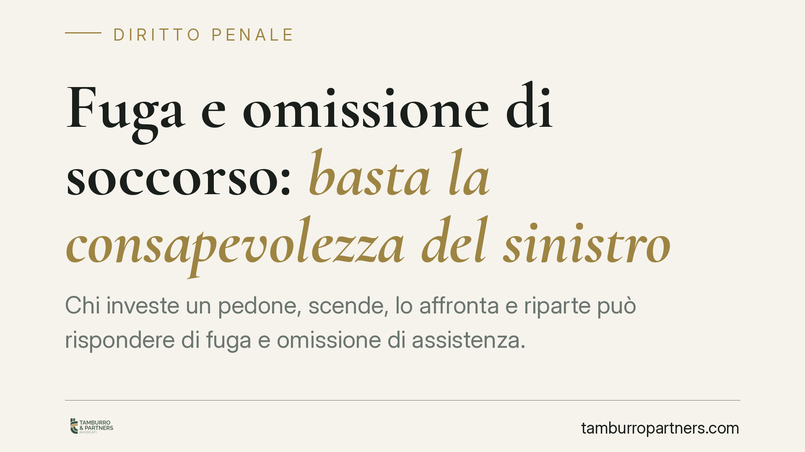

Fuga e omissione di soccorso: basta la consapevolezza del sinistro
Chi investe un pedone, scende, lo affronta e riparte può rispondere di fuga e omissione di assistenza. Secondo la Cassazione penale conta la consapevolezza di essere coinvolti in un sinistro potenzialmente lesivo, non la certezza delle lesioni. Un pedone rimasto in piedi non è, di per sé, un pedone illeso. Il punto merita attenzione per chiunque si trovi coinvolto in un incidente stradale.

Il caso
Un conducente investe un pedone. Si ferma, scende dall'auto, affronta verbalmente la persona colpita e poi riparte. In primo grado l'imputato era stato assolto dall'accusa di fuga e omissione di assistenza: il pedone, rimasto in piedi, sembrava illeso.
La Corte di Cassazione penale ha annullato quella decisione. Il principio è netto: ciò che rileva non è la certezza del danno, ma la consapevolezza di essere stati coinvolti in un sinistro oggettivamente idoneo a provocare lesioni.
*Nota di trasparenza: gli estremi esatti della pronuncia (indicata come sent. n. 27595/2026) devono essere verificati in banca dati prima di qualsiasi utilizzo in sede processuale.*
Inquadramento normativo
La materia è regolata dall'art. 189 del Codice della Strada, che impone a chiunque sia coinvolto in un incidente una serie di obblighi distinti.
Il comma 6 sanziona la condotta di fuga: l'allontanamento del conducente dal luogo del sinistro quando dall'incidente sono derivate lesioni alle persone. È un reato che punisce la sottrazione del soggetto all'identificazione e agli accertamenti.
Il comma 7 sanziona l'omissione di assistenza: il mancato soccorso alla persona ferita. Si tratta di una fattispecie autonoma, che tutela un bene diverso, cioè l'integrità e la vita della vittima.
Le due condotte hanno presupposti distinti e possono concorrere: chi scappa senza prestare aiuto può rispondere di entrambe. La fuga punisce l'allontanamento; l'omissione di assistenza punisce il mancato soccorso. Il fatto di essersi fermati per un istante non esclude automaticamente né l'una né l'altra.
Sul profilo soggettivo, secondo l'orientamento consolidato della Cassazione, è sufficiente che il conducente abbia la consapevolezza che il sinistro sia riconoscibile come potenzialmente idoneo a produrre danni alle persone. Non occorre la certezza che le lesioni si siano effettivamente verificate: basta la percepibilità dell'evento come potenzialmente lesivo.
Perché un pedone in piedi non è un pedone illeso
Il punto decisivo riguarda la percezione del conducente. Il fatto che la vittima resti in piedi, cammini o parli non dimostra l'assenza di lesioni.
Molti traumi — fratture non scomposte, contusioni interne, colpi di frusta, lesioni che si manifestano a distanza di ore — non sono visibili nell'immediato. Per questo la legge non chiede al conducente di diagnosticare le lesioni, ma di non abbandonare il luogo e di accertarsi delle condizioni della persona.
Chi riparte dopo aver investito qualcuno, confidando sul fatto che «sembrava stare bene», assume un rischio penale concreto. La valutazione sullo stato della vittima non spetta a chi ha causato l'urto.
Implicazioni pratiche
Per chi guida, la conseguenza è chiara. In caso di investimento o di contatto con un pedone, allontanarsi è pericoloso anche quando la vittima appare in buone condizioni.
La soglia che fa scattare gli obblighi dell'art. 189 è bassa: è sufficiente la coscienza di aver preso parte a un incidente idoneo, in astratto, a causare lesioni. Un breve confronto verbale seguito dall'allontanamento non equivale ad avere adempiuto agli obblighi di legge.
Sul piano difensivo, la pronuncia sposta l'attenzione dall'esito effettivo del sinistro alla ricostruzione di ciò che il conducente poteva e doveva percepire in quel momento. Ed è su questo terreno — la dinamica e la riconoscibilità del rischio — che si gioca gran parte dell'accertamento.
Cosa fare in concreto
- Fermati sempre. In caso di incidente con persone coinvolte, arrestati e non lasciare il luogo del sinistro.
- Verifica le condizioni della vittima. Non limitarti a un'impressione visiva: accertati che la persona non necessiti di soccorso e, se serve, allerta il 112.
- Identificati. Fornisci i tuoi dati e scambia le informazioni con le persone coinvolte.
- Documenta la scena. Fotografa posizioni, danni e stato dei luoghi; annota eventuali testimoni.
- In caso di contestazione ex art. 189 CdS, è opportuno raccogliere tempestivamente ogni elemento sulla dinamica e sulle condizioni della vittima e valutare l'assistenza di un difensore.
Contributo informativo a cura di Tamburro & Partners Avvocati. Non costituisce parere legale.
Ogni condominio ha una storia a sé.
Se gestisci un'amministrazione e vuoi un confronto su una specifica questione condominiale, scrivi allo studio. Ti rispondiamo entro un giorno lavorativo.